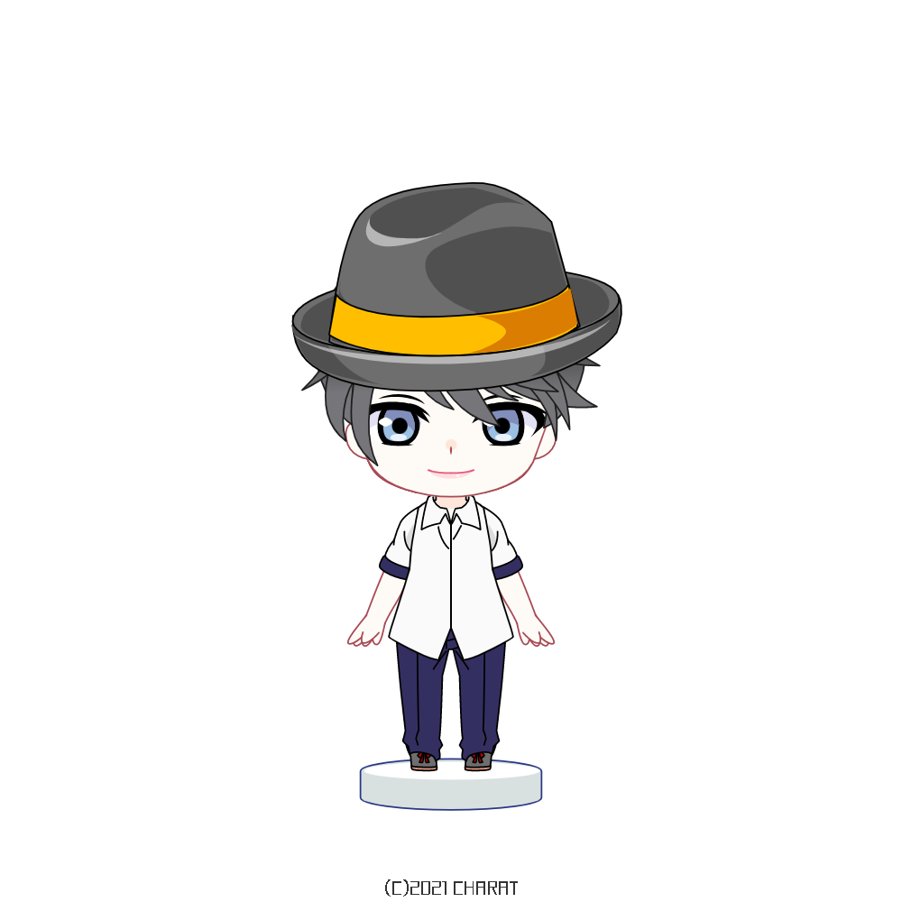

プロフィール
21歳男性。
2年前から多発型と蛇行型になり苦しむ。
現在は寛解。
見てくれた方へ
2021/10/18
方針
このサイトでは、
- 円形脱毛に悩んでいるけどどんな治療があるのか分からない
- 治療を始めたけど一向によくならない
といった人向けに情報を伝えていきます。
もし上記以外の、例えばAGAやFAGA、コロナウイルスの脱毛症で苦しんでいる人にも、（治療法は全く異なりますが）助けになるようなことも書いていきます。
しかし当サイトの運営者は一介の大学生なので、まずは軽症でもなんでもいいので皮膚科に行ってみることを強く勧めます。
脱毛症の経験
まず初めに、運営者である僕自身の経験について話していきたいと思います。
症状としては多発型、蛇行型脱毛症です。
頭髪は半分以上なくなり、眉毛やまつげなどの全身の体毛も抜け落ちました。
少し良くなったかと思えばさらに悪化してを繰り返し2年間かけて療養しました。
この病気が精神的にもかなりきつく、周りの理解やサポートが不可欠であることも身をもって実感しました。
たくさんの治療法を試し、たくさんの本やサイトから情報を収集してきた中で得た経験や知識を、同じように苦しんでいる人に届けたいと思いこのサイトを立ち上げました。
療養の流れ
さて、このサイトでの療養の流れをまとめると、以下の図のようになります。
この図で伝えたいことは、自律神経→睡眠→食事→治療法の順で見直してほしいということです。
今後この4点を重点に置いて記事を充実させていきたいと思うのでぜひご覧ください。
最後に
最後に、この病気は精神的につらい時期がかなり長いです。
朝、枕に髪の毛が大量についてた時。浴室の排水溝に溜まってしまう時。
気にしないことが一番とは言うけれどそんなことは難しいです。
不安や焦りで眠れない夜だってあると思います。
僕だってありました。
その焦燥感を少しでも肩代わりできるように公式LINEを設置します。
脱毛症のコミュニティは少なく、相談できる相手も中々いないと思います。
利益誘導はしませんし、秘密は必ず守ります。
一介の大学生なので不安や怒りをぶちまけてもらっても構わないですし、話半分で聞いてもらっても構いません。
少しでもこのサイトを見てくれているあなたの助けになることを願っています。